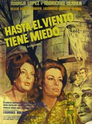
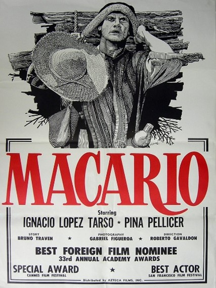
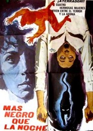

Cine
Estas películas serán proyectadas ya sea; en el audiovisual o en la explanada de la escuela.
Cartelera
| Horario | Cartel | Película | Género | Sinopsis |
|---|---|---|---|---|
| 12:00 a 14:00 |  | Hasta el viento tiene miedo (1968) | Horror gótico | La historia se desarrolla en un internado para señoritas llamado Santa Lucía, que se encuentra aislado en una mansión antigua y sombría en medio de un bosque. El internado es dirigido por la estricta y autoritaria directora Bernarda (interpretada por Marga López), quien impone reglas estrictas y castigos severos a las estudiantes. Las alumnas del internado comienzan a experimentar fenómenos inexplicables y aterradores. |
| 14:00 a 16:00 |  | Macario (1960) | Drama | Cuenta la historia de Macario, un campesino que tiene la habilidad de ver y comunicarse con los muertos. La película es una reflexión profunda sobre la vida, la muerte y la cultura mexicana. |
| 16:00 a 18:00 |  |
El libro de la vida (2014) | Animada | La película sigue a Manolo, un joven torero, mientras viaja a través del mundo de los vivos y los muertos para demostrar su valentía y amor. |
| 18:00 a 20:00 |  | Más negro que la noche (1975) | Suspenso | La trama sigue a cuatro mujeres jóvenes que heredan una mansión embrujada donde ocurren eventos sobrenaturales relacionados con el pasado de la casa y la festividad del Día de Muertos |